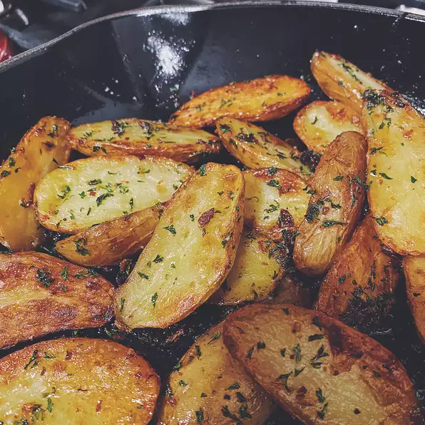

Fingerling Potatoes

Description
This roasted fingerling potato recipe is simple and perfect. Fingerlings have a natural hint of sweetness that makes them a nice alternative to other potatoes
The Parmesan cheese and garlic brown up in the oven for crunchy bits of flavor.
Ingredients
- 1 pound fingerling potatoes, halved lengthwise
- 2 cloves garlic, minced
- 2 tablespoons grated Parmesan cheese
- 1 teaspoon lemon zest
- ½ teaspoon salt
- ¼ teaspoon freshly ground black pepper
- 2 tablespoons olive oil
- 1 tablespoon butter
- 2 tablespoons chopped fresh parsley
Steps
- Preheat the oven to 425 degrees F (220 degrees C).
- Toss potatoes, garlic, Parmesan cheese, lemon zest, salt, and black pepper together in a bowl. Drizzle with olive oil and toss again until evenly combined.
- Heat a cast-iron skillet over medium-high heat. Add butter and heat until melted. Add potatoes; cook and toss until evenly coated with butter, about 2 minutes. Move the skillet to the preheated oven.
- Roast in the preheated oven until soft, 15 to 20 minutes, tossing halfway through. Remove from oven and top with parsley.